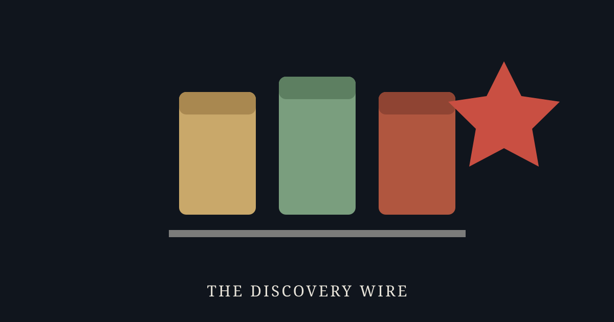

November 18, 2026 · 1 min read
Recall Radar: Why the Pantry Needs a System, Not a Junk Drawer

Illustration by The Discovery Wire
Recall Radar: Why the Pantry Needs a System, Not a Junk Drawer
When a food recall is announced, the notice always says the same thing: check your pantry for the affected product, with these lot numbers, bought between these dates. It's a reasonable instruction — unless your pantry, like most, is an archaeological site. Nobody can check a lot number on a product they don't know they own.
That's the real shape of the recall problem. The announcements are public and constant. What's missing in most kitchens is the other half of the equation: a simple inventory of what's actually on the shelves, with purchase dates, that a recall notice can be checked against in two minutes instead of twenty.
The two-minute version of food safety
- An inventory you can scan. What's in the pantry and freezer, roughly when it went in. Not a spreadsheet hobby — a list, kept current the way a grocery list is kept current.
- A weekly recall check. Federal recall announcements come out on a steady drumbeat. A standing ten-minute weekly habit — scan the week's notices against the inventory — catches the one that matters the year it matters.
- Expiry dates that mean something. A tracker turns "is this still good?" from a smell test into a date you wrote down when the food was fresh and you were thinking clearly.
None of this requires an app, a subscription, or a smart fridge. It requires the list and the habit.
Our workshop built the pairing as the PantryCheck Recall Radar — Starter Kit: a pantry inventory system plus the weekly recall-check routine, designed to make that two-minute check the default instead of the exception.
Source:
← Back to latest stories